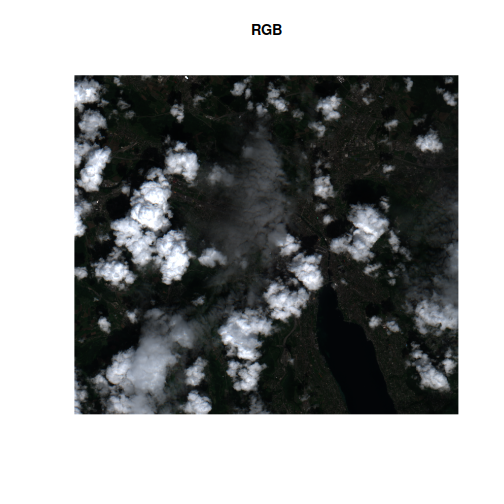
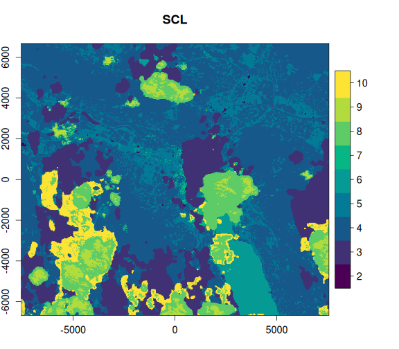
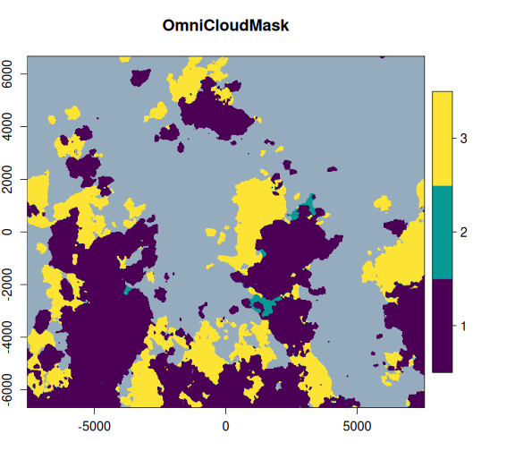
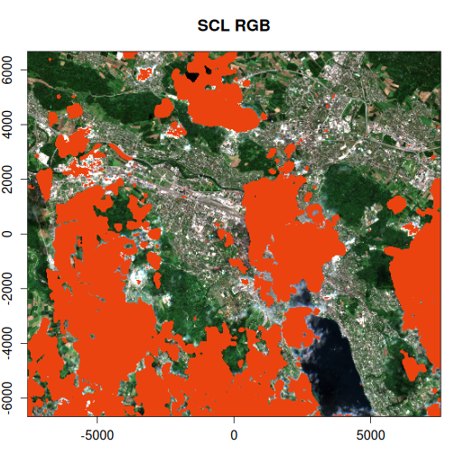
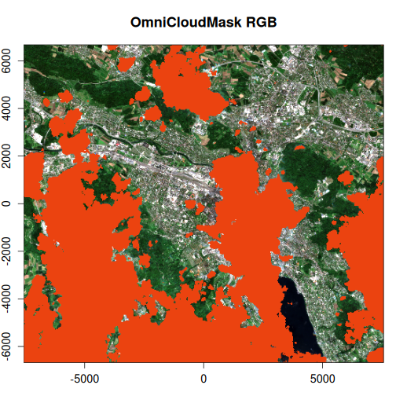
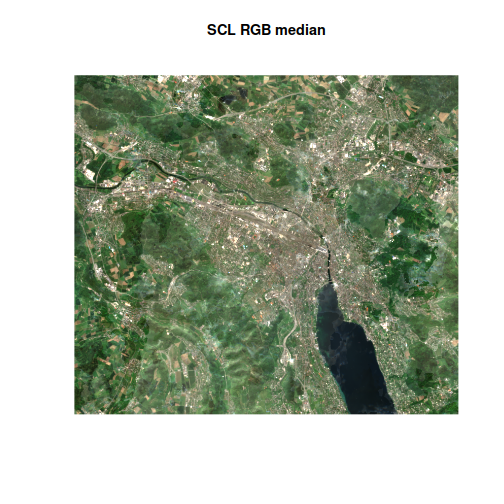
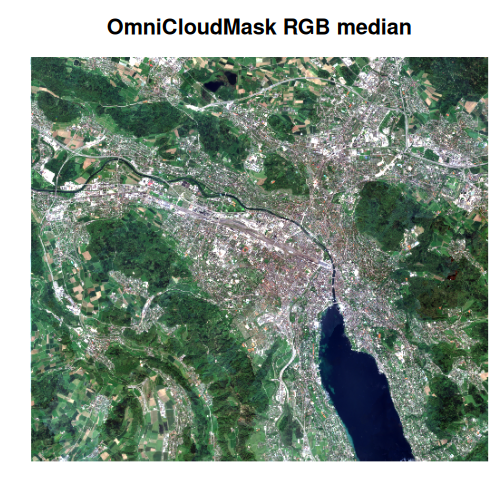

One of the most powerful features of VRT python pixel functions is the ability to run any python code on a raster dataset, on the fly. The potential value here is massive and vrtility only scratches the surface of what is possible here.
In this vignette, we will demonstrate how to use the OmniCloudMask model to create a cloud mask for Sentinel-2 imagery. “OmniCloudMask Python library for state-of-the-art cloud and cloud shadow segmentation in high to moderate resolution satellite imagery”; it is an incredible project so please also check out their GitHub repository. By providing only the red, green and near-infrared bands, the model can create a cloud mask using a pre-trained convolutional neural network (CNN) model.
vrtility provides a streamlined way to “bake-in” this cloud masking right into a VRT file! The cloud mask is significantly better than most provided masking products included with for example Sentinel L2A and Landsat.
Let’s work around Zurich and really test the limits of these masks - retaining imagery with up to 80% cloud cover.
library(vrtility)
bbox <- gdalraster::bbox_from_wkt(
wkt = "POINT (8.51 47.38)",
extend_x = 0.1,
extend_y = 0.06
)
te <- bbox_to_projected(bbox)
trs <- attr(te, "wkt")
s2_stac <- sentinel2_stac_query(
bbox = bbox,
start_date = "2024-04-01",
end_date = "2024-05-30",
max_cloud_cover = 80,
assets = c("B02", "B03", "B04", "B08", "SCL")
)
# number of items:
length(s2_stac$features)
#> [1] 9Now let’s get all of these rasters locally - this isn’t usually
needed but we can’t run the cloud mask inference in parallel (at least
not on my poor laptop). So using with we can isolate the
application of our mirai daemons like so to download the data:
with(mirai::daemons(6), {
zurich_vrt <- vrt_collect(s2_stac) |>
vrt_warp(
t_srs = trs,
te = te,
tr = c(10, 10)
) |>
vrt_compute(
outfile = fs::file_temp(ext = ".tif"),
recollect = TRUE
)
})At this point, we can now create a mask using the
vrt_create_mask function. Note that there are two key
arguments, inbands and maskfun.
inbands must be a named numeric vector, with names
corresponding to the required bands for the pixel mask string passed to
maskfun. At present, the only available masking function is
create_omnicloudmask(). The vrt_create_mask
function is designed such that it can handle mask functions that may be
added in the future.
Once the mask is created, it will be added as a new band to the VRT
object. We can then compute the mask with vrt_compute(),
which will then materialize the mask as a new raster file. Note that we
use recollect = TRUE to return a new
vrt_collection object because we plan to do some further
processing.
zurich_vrt_mask <- zurich_vrt |>
vrt_create_mask(
inbands = c(red = 3, green = 2, nir = 4),
maskfun = create_omnicloudmask()
) |>
vrt_compute(
fs::file_temp(ext = ".tif"),
recollect = TRUE
)Now, let’s take at the OmniCloudMask and the Sentinel-2 SCL bands, alongside the RGB image. We can clearly see that the OmniCloudMask is identifying a greater area of clouds and shadows.
purrr::walk2(
.x = list(c(3, 2, 1), 5, 6),
.y = c("RGB", "SCL", "OmniCloudMask"),
~ plot(
zurich_vrt_mask,
item = 2,
.x,
main = .y,
legend = FALSE,
axes = FALSE,
na_col = "#b6b6b6"
)
)
Right okay, so what does this mean for the actual masked areas? Let’s
apply the masks and compare an image to see how the performance compares
between OmniCloudMask and the Sentinel-2 SCL band. Note that when using
vrt_set_maskfun(), we can specify the mask values to be
used for masking. In the case of the OmniCloudMask, the values range
from 0 to 3, where 0 is clear, 1 is thick cloud, 2 is thin cloud, and 3
is cloud shadow. We’re going to mask any of these classes.
scl_rgb <- zurich_vrt_mask |>
vrt_set_maskfun(
mask_band = "SCL",
mask_values = c(0, 1, 2, 3, 8, 9, 10, 11)
)
ocm_rgb <- zurich_vrt_mask |>
vrt_set_maskfun(
mask_band = "omnicloudmask",
mask_values = 1:3
)
purrr::walk2(
list(scl_rgb, ocm_rgb),
c("SCL RGB", "OmniCloudMask RGB"),
~ plot(
.x,
item = 2,
c(3, 2, 1),
main = .y,
axes = FALSE,
na_col = "#eb4310"
)
)
Clearly, the OmniCloudMask is doing a much better job of capturing more of the clouds and shadows - it even seems to remove some false positives that exist in the SCL band.
Finally, let’s compute the median of the RGB bands for both the SCL and OmniCloudMask masked images and plot the results…
scl_median <- vrt_stack(scl_rgb) |>
vrt_set_py_pixelfun(pixfun = mean_numpy()) |>
vrt_compute(outfile = fs::file_temp(ext = ".tif"))
ocm_median <- vrt_stack(ocm_rgb) |>
vrt_set_py_pixelfun(pixfun = mean_numpy()) |>
vrt_compute(outfile = fs::file_temp(ext = ".tif"))
purrr::walk2(
list(scl_median, ocm_median),
list("SCL RGB median", "OmniCloudMask RGB median"),
~ plot_raster_src(
.x,
item = 1,
c(3, 2, 1),
main = .y,
axes = FALSE
)
)
We can see a huge difference between the two median images. The
OmniCloudMask is very clear whereas the SCL-masked image is very
“milky”, clearly a lot of cloud artefacts remain. We could easily
improve the SCL composite by being discarding more cloudy images but
this serves as a great example of how improving cloud masking can
provide a major benefit! We could also further enhance this composite
using the multi-dimensional reduction functions available from
multiband_reduce().